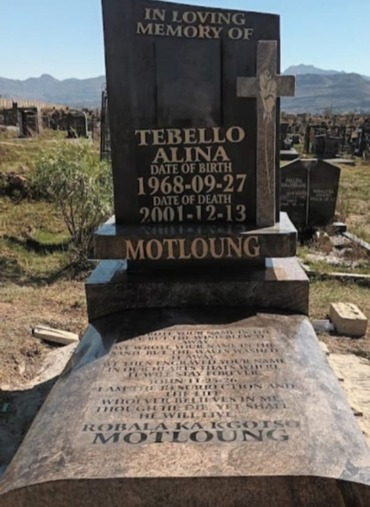

Our Services:
- Tailored Memorials: Crafting personalized services that honor the unique essence of your loved one.
- Compassionate Assistance: Our dedicated team is committed to assisting you throughout the process, providing gentle support for a smooth and comforting journey.
- Enduring Tributes: Whether through traditional burials or contemporary celebrations of life, we provide diverse options to commemorate your loved one in a manner befitting their legacy.
Why Choose Us?
- Decades of Experience: Our director with his long-standing presence in the community has equipped us with the understanding and expertise to handle services of all faiths and cultures.
- Attention to Detail: We take care of every aspect, from floral arrangements to memorial stationery, allowing you to focus on what truly matters.
- Community Focused: We believe in giving back and supporting the communities we serve, fostering a spirit of togetherness.
